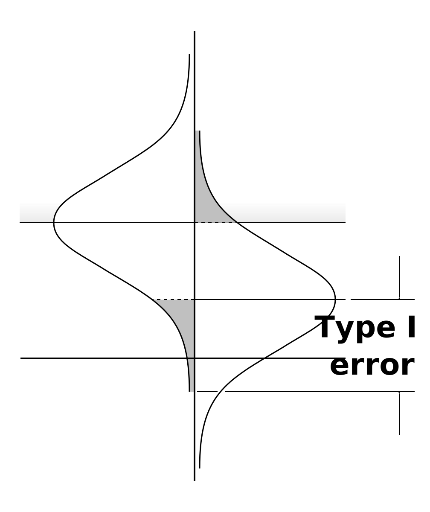
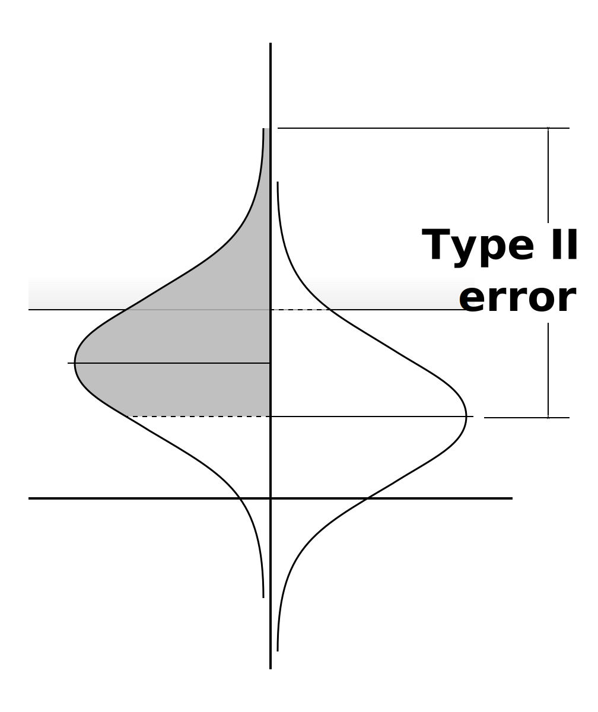
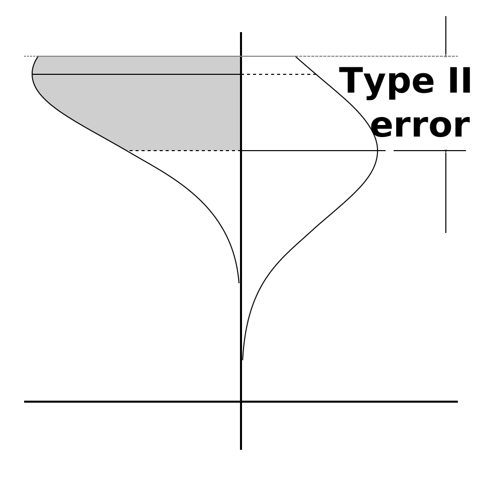

Important Insignificance
An example of understanding statistics by looking at them sideways
When is an insignificant result important? When you check for the wrong significance.
(Note: The discussion on this page employs visual aids I'm calling “sideways statistics”. They're explained on the page of the same name, Sideways Statistics.)


Figure 01
Say you're about to run an linear regression. You've already determined the expected size of effect, you've set the significance bar at an alpha of 0.05, and with those two you've determined the sample size to give you a statistical power of 0.84. Figure 01 shows your statistical experiment as designed.
The minimum correlation that is statistically significant is marked by the line that bisects the population probability curve on the right side of the graphic. Since you set alpha to 0.05, 5% of the area bounded by the population probability curve extends below the null line.
That's all the same in the next graphic, Figure 02, but the arrow is pointing to the line that marks the results of your analysis. It has failed to be large enough to qualify as statistically significant.

Figure 02
Most people would assume that the analysis was a bust and that without a statistically significant correlation, you can't really say anything definitive about the results. But that isn't true.
Let's move on to Figure 03, in which the minimum statistically significant correlation has been removed, so that now the curve on the right side of the graphics is the population probability curve that's centered on the result from your hypothetical analysis. That result is not “statistically significant” at ‘p<.05’ because more than 5% of the area between that curve and the vertical baseline is below the horizontal null line.
But that's going on at the bottom of the population probability curve. Let's consider the top of that curve, where there's been a new line added to the graph, one that's marked with an arrow. Below that line is 95% of the area between the population probability curve and the vertical baseline. Which means you can say, with a confidence of ‘p<.05’, that the population correlation is no higher than that line.

Figure 03
Therefore, another way to look at the results of your analysis is to say that you have found a statistically significant “upper bound” for the population correlation. Whether or not that is a useful thing to know depends on what real-world phenomena your data is tracking.
So, for example, if your data is tracking the effectiveness of some new investment strategy by correlating its implementation to the change in overall returns, it might be fairly straight-forward to determine the minimum impact required to make it worthwhile to use the new strategy. Whatever correlation matches to that impact becomes the minimum correlation that supports using the new strategy.
In a scenario such as that, a null-hypothesis significance test would likely be useless to you. If it wasn't readily apparent—or at least highly probable—that the new strategy would improve outcomes, no one would even be trying. That there will be an improvement is something of a foregone conclusion; what matters is the degree of the improvement. And what matters to you is the confidence with which you can state that the correlation you find through your analysis is either higher or lower than the minimum correlation that supports using that new strategy.
If we combine this hypothetical scenario with the hypothetical results from earlier, we can say that it doesn't matter that the resulting correlation didn't achieve statistical significance compared to null. What matters in this case is whether or not the upper bound we found is lower than the minimum correlation that supports using the new procedure. Because if it is, we can say with a confidence of ‘p<.05’ that the new strategy isn't worth implementing. Even though we can't say (with the same confidence) that the correlation isn't significantly different than zero.
Testing for an upper bound
What would it look like if we designed our experiment from the beginning to check for an upper bound, such as described in the previous section? That is, let's test to see if we can say, with 95% confidence, that a correlation is lower than some value that we interpret as the minimum important correlation?

Figure 04
Instead of the sample probability curve on the left side of the graph being centered around the expected effect size, it would be centered around the value that's the minimum important correlation. Then, the population probability curve on the right side of the graph would be positioned so that 95% of the area between it and the vertical baseline would be below the minimum important correlation. The line that bisects the population probability curve is therefore the maximum correlation that demonstrates that the correlation does not meet your criteria for importance. See Figure 04.
The shaded area on the left side of the graph are all the population correlations that are lower than the minimum important correlation. The shaded area on the right side is 5% of the area between the population correlation curve and the vertical baseline. Since that shaded area is 0.05 of the total, the line bisecting the that curve marks the maximum sample correlation at which you can say, with ‘p<.05’, that the population correlation is unimportant.
When it comes to doing the actual calculation things become somewhat more complicated. Or, rather, they are less symmetric.

Figure 05
When considering correlations near zero (which is where null-hypothesis significance testing is most relevant), you can assume that the probability distributions are symmetric about some mean value. But when looking at larger correlations, you can no longer assume that.
This is because correlations can never have a magnitude above 1. So, as the correlation of interest moves higher up the vertical baseline, the probability distribution begins to “pile up” against the maximum value of 1, and this distorts the curve, making it asymmetric.
Figure 05 shows this. The minimum important population correlation is no longer the mean of the sample correlation probability curve. Instead it's the mode—the value with the highest probability. And the mode does not perfectly bisect the area of the sample correlation probability curve; this means we can no longer assume that 50% of the area is on either side of the correlation that defines the curve.
To do the calculations, you have to transform the data in order to correct for this distorting truncation to the probability curves. Typically this is done by transforming each correlation into its Fisher z-score, using the following equation.

Figure 06
What the Fisher transformation does it to effectively remove the upper and lower bounds—respectively at +1 and -1—that's a consequence of the nature of correlations. Figure 06 shows one way of understanding what the transformation does. The perfectly straight diagonal line represents untransformed correlations; it's the line where r=r. The long curving line is shows the results of Fisher transformations; it's the line where r=z(r). Near the origin the two lines are almost identical, but as the correlation magnitude approaches 1, the transformed values split away and extend toward infinity. This effectively removes the truncating bounds, so the probability curves have nothing to “bunch up” against.
The effects of truncation will come up again in the discussion of Type II errors for this sort of analysis.
Type I & II errors

Figure 11
The visual interpretation of Type I and Type II errors for this type of analysis differs from that for a null-hypothesis significance test. For a Type I error in a null-hypothesis significance test, the population is assumed to have a correlation of zero, and for a Type II error, the population is assumed to be equal to the correlation predicted in the estimate of effect size. For an upper-bound type of test, there are no specific correlations to assume for the determination of error. Rather, a worst-case-scenario is used. For both error types, the worst-case is a population correlation that is almost exactly equal to the correlation selected as the lower boundary of importance. In a Type I error, the worst-case population correlation is infinitesimally higher than the importance cut-off; in a Type II error, the worst-case population correlation is infinitesimally lower than the importance cut-off.
Type I errors are false positives. In this case, that means that you would identify a population correlation as being below the minimum important correlation, when in fact it's equal to or above that minimum. Figure 05 shows a population correlation that is infinitesimally higher than the minimum important correlation. The line that bisects the population probability curve is the maximum correlation that would meet your hypothesis that the correlation is not important. So, the area below that line, and between the sample probability curve and the vertical baseline, is equal to the worst-case probability of getting an apparently unimportant sample correlation for a population that, in fact, has an important correlation.

Figure 12
Much like with the null-hypothesis significance test, we know that the area that covers the Type I error is 5%, since it is symmetric with the area that's between the population probability curve and the vertical baseline, and also above the value chosen as the minimum important population correlation. The sample population curve was positioned vertical such that the area above the minimum important correlation was 5% of the total, giving the analysis ‘p<.05’. Both the 5% areas are shaded in Figure 11.
Type II errors are false negatives. In this case that means you would fail to properly identify a population correlation as being below the minimum important correlation. Figure 12 shows a population correlation that is infinitesimally lower than the minimum important correlation. Any sample correlation that is higher than the maximum correlation that is significantly below the importance cut-off will lead to a Type II error. The population does have an unimportant correlation, but the sample analysis fails to identify it.

Figure 13
Based on Figure 12 alone, it would be reasonable to conclude that the worst-case statistical power would always be equal to alpha, and therefore the probability of a Type II error is always going to the residual of alpha. So, in our examples, beta would always be 95%, and the statistical power 5%. But it turns out this isn't always true, since you must also account for the effect that truncation has on the curves. Figure 13 shows a hypothetical analysis with a worse-case statistical power of 39.2%. This is because the truncation has an uneven effect on the two non-transformed probability curves, which means that they are no longer symmetric, so their respective mode lines no longer slice through identical areas at identical locations.